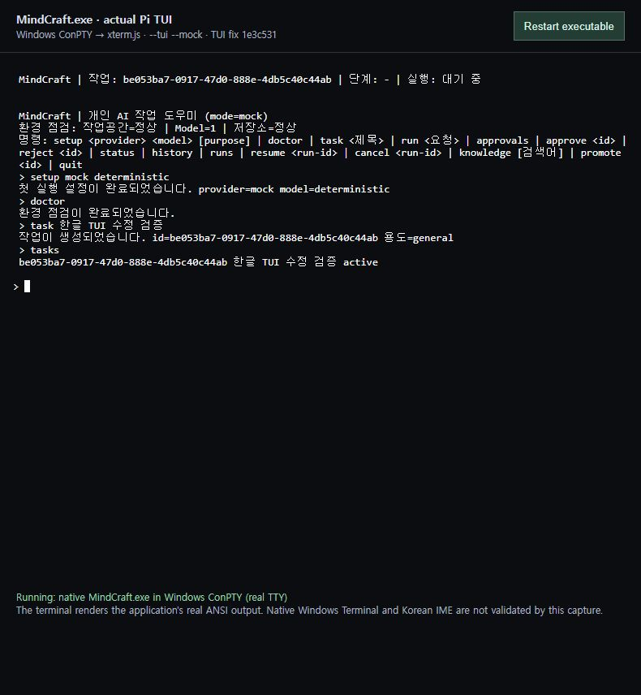

저희는 이번 프로젝트에서 에이전트를 쓰는 방식을 두 번 확장했습니다. 행사 전에는 팀이 공용 DDT 에이전트와 함께 제품을 만들었습니다. 본 행사에서는 Astra가 그 제품 지식을 가진 DDT와 Claude Code를 연결했습니다. 실제 요청과 실행 기록으로 그 과정을 소개하겠습니다.
MindCraft
먼저, MindCraft
우리가 만들던 제품은 작업의 맥락이 남는 개발 도구
터미널에서 AI 작업을 실행하고, 기록을 다음 작업에 이어 씁니다.
시작작업 만들기task
진행실행·승인run / approve
이어가기기록·지식 재사용history / knowledge
제품을 만드는 과정에서도, 팀의 맥락을 이어갈 방법이 필요했습니다.
MindCraft는 Pi 기반 터미널 도구입니다. AI에게 작업을 시키고 실행 이력과 승인, 재사용할 지식을 남기는 것이 핵심입니다. 제품 자체는 로컬 작업 도구이고, 팀이 함께 개발하는 데 사용한 공용 DDT는 별도의 개발 환경입니다. 오늘은 제품 기능 목록보다 이 제품을 함께 만든 방식을 이야기하겠습니다.
MindCraft
실험 01 · 공용 에이전트와 공동개발
같은 DDT를 통해 서로 다른 요청을 이어갔습니다
TUI에서 작업을 반복하고 싶다참여자 A · 8/20 · JOB-1
협업과 지식 재사용을 고민하자참여자 B · 8/26–27 · JOB-38
목적에 맞게 모델을 선택하자참여자 A · 9/3 · JOB-53
공용 Discord 에이전트DDTHermes
함께 이어 보는 기록
요청과 결정은 JOB에 설계와 구현은 파일·Git에 후속 작업은 그 근거에서 시작
같은 에이전트를 활용한 요청들이 하나의 제품 이력으로 쌓였습니다.
DDT는 Discord에서 팀이 함께 사용하는 Hermes 에이전트입니다. 초기 TUI 구상, 협업과 지식 재사용 방향, 모델 선택 정책처럼 요청이 달라도 관련 작업과 문서가 같은 제품 이력에 쌓였습니다. 화면의 문장은 원문을 짧게 풀어쓴 것입니다. 서로 다른 인간 작성자를 확인할 수 있는 범위는 조사 부록에 따로 남겼습니다.
MindCraft
공유하는 것과 분리하는 것
맥락은 대화 밖에도 이어갈 수 있게 남겼습니다
대화의 경계
서로 다른 세션
Discord 자동 스레드로 대화를 구분 스레드별 session ID에 요청을 보존
작업의 연결
JOB · 산출물 · Git
요청·설계·검토의 근거를 보존 승인한 범위의 지식을 다음 작업에 전달
팀의 지식을 공유하되, 각 요청의 맥락과 현재 기준을 구분합니다.
공용 에이전트를 썼다는 것이 모든 대화를 한 컨텍스트에 넣었다는 뜻은 아닙니다. DDT의 설정에는 자동 스레드가 켜져 있고, 이력에는 스레드별 session ID가 남아 있습니다. 요청자의 원본 ID가 다른 팀원들의 기여도 확인했습니다. 작업 요청, 설계, 검토, 구현 파일이 대화 밖에 남아 다음 요청을 연결했습니다. 예전 제안을 현재 요구사항으로 자동 취급하지 않는 기준도 문서에 남겼습니다. 모든 대화에서 오염이 없었다는 통계는 없으므로, 확인한 구조와 사례를 중심으로 설명합니다. MindCraft 제품의 workspace lock은 DDT의 세션 분리 증거와 구분합니다.
MindCraft
행사 전 · 컨셉에서 구현까지
아이디어는 여러 차례 바뀌고, 실행 가능한 MVP가 됐습니다
처음의 질문
작업을 반복하고, 팀의 지식을 이어 쓰자
Pi 기반 loop 구상에서 협업·LLM Wiki 방향을 논의했습니다.
JOB-1 · JOB-38
처음에는 TUI에서 작업을 반복하고 지식을 이어 쓰자는 구상이었습니다. 팀 관점의 요구도 더해졌습니다. 9월 3일에는 TUI 우선 방향과 목적별 모델 선택을 구체화했습니다. 5일에는 환경 진단부터 실행까지 명령 흐름을 만들었고, 6일에는 지식 재사용과 복구, 온보딩까지 확장했습니다. 단일 프롬프트의 결과가 아니라, 요청과 정정이 누적된 MVP였습니다. 네 버튼을 순서대로 눌러 실제 커밋 근거를 보여줍니다.
MindCraft
실험 02 · Astra의 오케스트레이션
본 행사에서는 이 지식을 다른 에이전트의 기준으로
DDT가 알고 있는 제품을, Claude Code가 AI-DLC 절차로 개발한다면?
기존 협업의 축적DDT
요구사항·설계·결정 근거
Astra 인계와 진행 조율
새 개발 환경Claude Code
AI-DLC 단계별 산출물
AI-DLC: 요구사항부터 설계·구현·검증을 단계별로 진행하는 개발 절차
본 행사에서는 질문이 바뀌었습니다. 기존 DDT가 축적한 제품 지식을 새로운 Claude Code 개발 환경에 연결할 수 있을까? 여기서 Astra가 두 에이전트 사이를 조율합니다. AI-DLC는 이번 새 개발에 사용하는 단계별 절차이며, MindCraft 제품 안에 들어가는 런타임 기능은 아닙니다.
MindCraft
실제 수행한 작성·검토·수정 흐름
Astra가 다음 작업을 정하고, 두 에이전트를 움직입니다
Astra현재 단계와 승인된 입력을 확인해 Claude를 실행
작성·수정
Claude Code
계획·스토리 작성 검토 지적 반영
제품 근거 검토
DDT
기존 요구사항 대조 수정 요청·재검토
독립 확인·진행
Astra
원문·수정본 대조 위임 범위의 다음 단계
Astra는 로컬 Claude CLI를 실행하고, 원격 DDT에 자료를 보내 검토를 받습니다. 수정 요청이 나오면 Claude에게 반영시킵니다. 여기서 중요한 것은 다음 행동을 결정하는 일입니다. 무슨 단계인지, 무엇이 승인됐는지, 받은 지적이 원래 요구사항과 맞는지 확인합니다. 자동화는 CLI와 SSH, 파일 인계를 활용했습니다. 실제 컴퓨터 화면을 조작한 사례는 뒤에서 별도로 보여드리겠습니다.
MindCraft
사례 · User Stories 검토 왕복
“작성 완료”에서 멈추지 않고 11개 지적을 다시 반영했습니다
27
스토리 작성
Claude · 페르소나 2개 P0 24개 / P1 보류 3개
11
DDT의 검토 지적
복구·진단·모드 격리·재개 입력 자료와 근거 전달 등
재검토
수정 후 승인
Claude가 대응표 작성 DDT가 11개 해소 확인
예: “복구한다”를 정상 저장·중단·손상 상황별 수용 기준으로 구체화
실제 첫 왕복에서 Claude는 스토리 27개와 페르소나 2개를 작성했습니다. DDT는 차단 6개와 비차단 5개, 모두 11개 지적을 남겼습니다. 예를 들어 복구한다는 표현을 정상 저장, 쓰기 중 중단, 저장소 손상으로 나눠야 했습니다. Astra가 지적을 전달하고 Claude가 수정 대응표를 만들었습니다. DDT는 재검토에서 11개가 수용 기준 수준에서 해소됐다고 승인했습니다. 이는 구현 테스트 결과가 아니라, 개발 전에 모호함을 줄인 실제 사례입니다.
MindCraft
사례 · Application Design 계획 승인
Astra는 검토 결과도 원문으로 다시 확인했습니다
발견한 차이
재검토의 지적 번호가 처음과 달랐습니다
승인 문구만으로 모든 항목을 닫을 수는 없었습니다.
실제 후속 행동
원문과 대응표 대조 제출 파일 21개 확인
지적 내용의 해소와 파일 동일성을 확인하고 계획·답변 범위를 승인했습니다.
에이전트 사이의 판단 차이를 찾아, 근거가 맞는 다음 작업으로 연결
Astra가 단순 전달을 넘어선 장면도 있습니다. Application Design 계획 재검토에서 DDT가 지적 번호를 처음과 다르게 요약했습니다. Astra는 최초 지적과 수정 대응표의 내용을 대조했고, 제출했던 21개 파일의 로컬 해시도 확인했습니다. 내용 검토와 파일 동일성은 다른 확인입니다. 이 과정을 거쳐 계획과 여덟 답변에 대한 위임 승인을 기록했습니다. 아직 만들지 않은 설계나 코드까지 승인하지는 않았습니다.
MindCraft
본 행사 · 컴퓨터 사용 사례
화면을 보고 직접 조작해 실제 동작까지 확인했습니다

실제 실행 화면 상단 · Windows ConPTY + 브라우저 터미널
설정 → 진단 → 작업 → 종료
Astra가 입력·클릭·키 조작으로 확인
출력 누적
설정 안내 갱신
quit 종료
3건 수정 · 신규 회귀 3/3
기존 MVP의 Windows 검증 작업 AI-DLC 신규 구현과 별도 이력
컴퓨터 사용 능력은 이 실행 기록으로 보여드릴 수 있습니다. Astra는 브라우저 터미널에 연결된 실제 Windows ConPTY의 Pi TUI에서 설정과 진단, 한글 작업 생성, 종료를 조작했습니다. 출력이 누적되고 설정 안내가 남고 quit이 프로세스를 종료하지 않는 세 문제를 찾아 수정했습니다. 신규 회귀 테스트 3개가 통과했습니다. 전체 회귀는 당시 155개 중 141개 통과, 기존 실패 14개가 남았습니다. 이는 기존 MVP의 Windows 검증 작업으로, 앞의 AI-DLC 신규 개발과 구분합니다. 네이티브 Windows Terminal이나 한글 IME 검증이라고 말하지 않습니다.
MindCraft
자동화의 범위와 확인된 도달점
작업 지시에서 기록까지, 개발 절차를 연결했습니다
AI-DLC 신규 개발
작성 · 검토 · 수정 · 승인 · 기록
스토리 승인 / 실행 계획 rev.3 승인 / 설계 계획 rev.2 승인
실행 래퍼로 변경 커밋·푸시와 검토 HTML 생성 연결
기존 MVP Windows 확장
빌드 · 화면 조작 · 수정 · 재검증
실행 파일과 TUI 수정 결과를 DDT에 근거와 함께 인계
전체 출시 완료와 실제 provider 검증은 별도 확인 대상
전체 과정을 잇는 운영 방식을 만들고, 완료 지점은 근거로 남겼습니다.
자동화는 작성과 검토에만 머물지 않았습니다. 실행 래퍼와 훅으로 변경을 커밋·푸시하고, 사람이 나중에 판단할 수 있는 검토 HTML을 남겼습니다. 다만 전체 제품을 AI-DLC로 새로 완성했다는 뜻은 아닙니다. 확인된 신규 개발 도달점은 설계 계획 승인입니다. 기존 MVP의 Windows 빌드와 화면 검증은 별도로 진행했습니다. 이렇게 두 흐름의 결과와 남은 일을 구분해야 다음 에이전트가 잘못된 완료 상태를 물려받지 않습니다.
MindCraft
두 실험에서 얻은 것
함께 쌓은 맥락이, 다음 에이전트의 출발점이 됩니다
01공용 에이전트와 기록으로 팀의 개발을 이어가고
02Astra가 서로 다른 에이전트의 작업과 판단을 연결하고
03실행 화면과 검토 근거로 사람이 결과를 확인합니다
MindCraft · DDT × Claude Code × Astra
이번 시도에서 확장한 것은 에이전트를 쓰는 단위입니다. 팀은 공용 에이전트와 기록을 통해 개발을 이어갔고, Astra는 서로 다른 에이전트의 작업과 판단을 연결했습니다. 컴퓨터 조작과 실행 근거까지 남겨 사람이 결과를 확인할 수 있게 했습니다. 함께 쌓은 맥락이 다음 에이전트의 출발점이 된다는 것이 저희가 확인한 가능성입니다.
MindCraft
부록 · 질의응답
발표의 근거와 관찰 범위
행사 전 8/20–9/6 DDT 세션·JOB·Git 이력
본 행사 9/7 Claude/DDT 검토 원문·Astra 작업 이력·Windows 실행 기록
구분 공용 bot ≠ 단일 대화 · DDT 운영 ≠ 제품 런타임 계획 승인 ≠ 구현 완료 · ConPTY 화면 ≠ Windows Terminal 검증